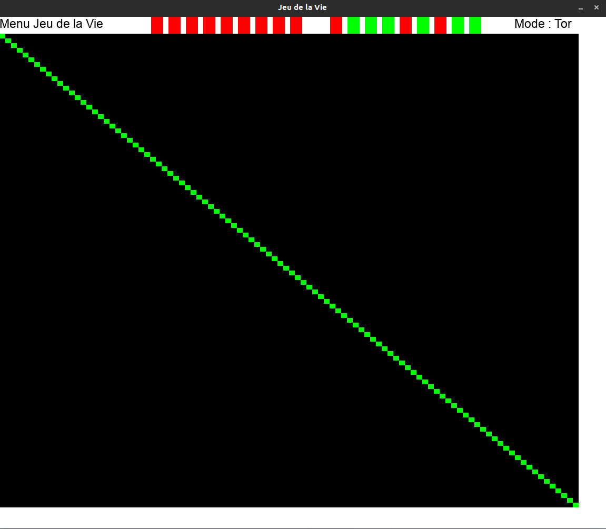
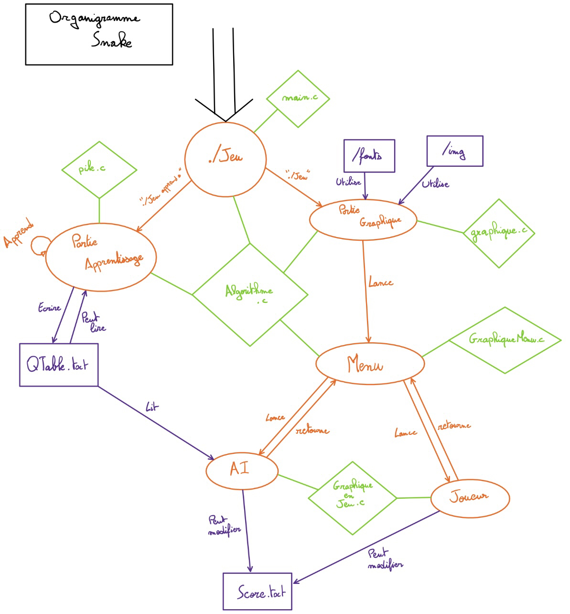
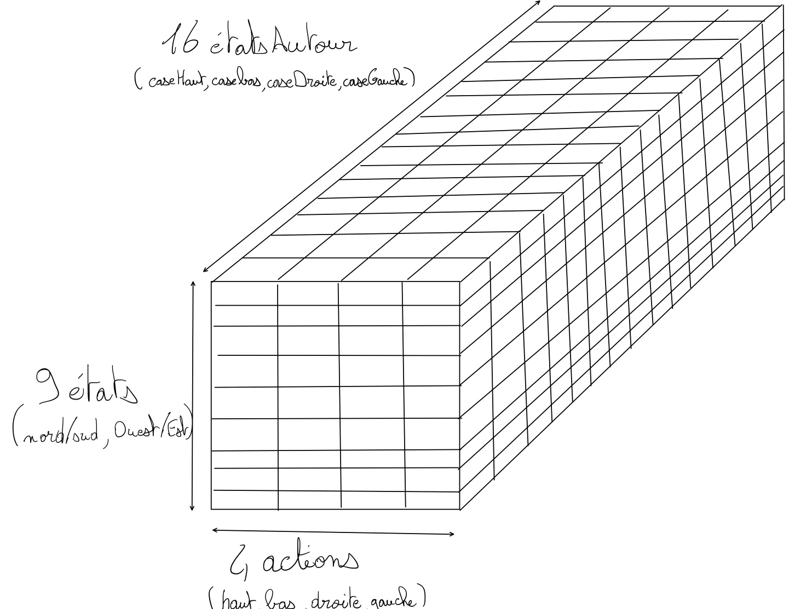

Accueil
Membres du Groupe 31
Bienvenue sur le site web des membres du groupe 31 du Projet ZZ1 2022, nous sommes :
- BALLEJOS Lilian
- CORNUEZ Charlotte
- LEGER Bertrand
Hébergement du projet
Les programmes
Les programmes se trouvent tous dans le GitLab ISIMA de BALLEJOS Lilian à ce lien: ici
Tous les programmes à jours sont dans la branche MASTER
TODO List
Fonctionnement
Vous trouverez ici le programme de tout ce que l'on va faire durant ces 2 semaines jour par jour
20/06/22 (Lundi)
| Avancé | Membre | Tâche |
|---|---|---|
| ✔️ | BALLEJOS Lilian | Mise en place du site |
| ✔️ | Commun | Mise en place d'un GitLab organisé |
| ✔️ | BALLEJOS Lilian | Xfenetré |
| ✔️ | LEGER BERTRAND | Xfenetré |
| ✔️ | CORNUEZ Charlotte | Xfenetré |
| ✔️ | BALLEJOS Lilian | Animation Forme |
21/06/22 (Mardi)
| Avancé | Membre | Tâche |
|---|---|---|
| ✔️ | Commun | Répartition tâches jeu de la vie |
| ✔️ | BALLEJOS Lilian | Animation avec Texture |
| ✔️ | LEGER Bertrand | Animation Forme |
| ✔️ | CORNUEZ Charlotte | Animation Forme |
| ✔️ | CORNUEZ CHarlotte | Animation avec Texture |
| ✔️ | LEGER Bertrand | Animation avec Texture |
| ✔️ | Commun | Commencement du Jeu de la vie |
21/06/22 (Mercredi)
| Avancé | Membre | Tâche |
|---|---|---|
| ✔️ | Commun | Finalisation du Jeu de la vie |
| ✔️ | Commun | Répartition des tâches du "Premier Chef d'Oeuvre" |
| ✔️ | Commun | Commencement du premier Chef d'Oeuvre |
| ✔️ | BALLEJOS Lilian | Mise à jour du site en prévision de vendredi |
22/06/22 (Jeudi)
| Avancé | Membre | Tâche |
|---|---|---|
| ✔️ | BALLEJOS Lilian | Remplissage du site pour la présentation de vendredi |
| ✔️ | Commun | Finalisation du Chef d'Oeuvre |
23/06/22 (Vendredi)
| Avancé | Membre | Tâche |
|---|---|---|
| ✔️ | Commun | Soutenance |
| ✔️ | Commun | Recherche sur l'apprentissage par renforcement |
| ✔️ | Commun | Répartition des tâches pour le jeu avec apprentissage par renforcement |
27/06/22 (Lundi)
| Avancé | Membre | Tâche |
|---|---|---|
| ✔️ | BALLEJOS Lilian & CORNUEZ Charlotte | Amélioration de l'animation du jeu |
| ✔️ | LEGER Bertrand | Commencement de l'apprentissage |
28/06/22 (Mardi)
| Avancé | Membre | Tâche |
|---|---|---|
| ✔️ | BALLEJOS Lilian | Création d'un menu |
| ✔️ | LEGER Bertrand | Ecriture du code d'exploration |
| ✔️ | BALLEJOS Lilian & CORNUEZ Charlotte | Ecriture du code d'exploitation |
29/06/22 (Mercredi)
| Avancé | Membre | Tâche |
|---|---|---|
| ✔️ | Commun | Mise en commun des différents codes |
| ✔️ | Commun | Débugage du code |
30/06/22 (Jeudi)
| Avancé | Membre | Tâche |
|---|---|---|
| ✔️ | BALLEJOS Lilian & LEGER Bertrand | Débugage du code |
| ✔️ | CORNUEZ Charlotte | Mise à jour du site |
1/07/22 (Vendredi)
| Avancé | Membre | Tâche |
|---|---|---|
| ✔️ | Commun | Finalisation du code et du site |
| ✔️ | Commun | Nettoyage et "Commentation" du code |
| ✔️ | Commun | Soutenance |
Xfenetré
BALLEJOS Lilian
Explication et Code
Mise en place d'un programme qui récupère les dimensions de l'écran principal et crée une animation de sinusoïde avec les fenêtres générées.
/*Taille ecran*/
SDL_DisplayMode current;
SDL_GetCurrentDisplayMode(0, ¤t);
int width = current.w;
int height = current.h;
//printf("%d %d\n", width, height);
int milieu = height / 2 - TAILLE_FENETRE; // milieu ecran axe y
int nbr_element = width / TAILLE_FENETRE; // nb d'element a generer
/*PLacement et creation fenetre*/
SDL_Window **tabWindow;
tabWindow = (SDL_Window **)malloc(sizeof(SDL_Window *) * nbr_element);
for (int i = 0; i < nbr_element; i++)
{
tabWindow[i] = SDL_CreateWindow(
"Fenetre", // codage en utf8, donc accents possibles
i * TAILLE_FENETRE, milieu, // a coté de sa voisine et au milieu de l'ecran en y
TAILLE_FENETRE, TAILLE_FENETRE,
0); // non redimensionnable
if (tabWindow[i] == NULL)
{
SDL_Log("Error : SDL window %d creation - %s\n",
i, SDL_GetError()); // échec de la création de la fenêtre
SDL_Quit(); // On referme la SDL
exit(EXIT_FAILURE);
}
}
/*ANimation 1*/
/*on créé la courbe cosinus*/
for (int i = 0; i < nbr_element; i++)
{
/*cos a chaque point "I * TAILLE_FENETRE*/
float val_cos = cosf((i) * TAILLE_FENETRE);
/*cos au carré pour osciller entre 0 et 1 et pas -1 et 1 puis d'amplitude de taille "hauteur ecran / 2 qu'on recentre au milieu avec + milieu /2"*/
SDL_SetWindowPosition(tabWindow[i], i * TAILLE_FENETRE, (val_cos * val_cos * milieu) + milieu / 2);
SDL_Delay(100);
}
/*Animation 2*/
/*on fait osciller en changeant la valeur x des points avec une variante*/
int variante = 0;
while (variante < 100)
{
for (int i = 0; i < nbr_element; i++)
{
float val_cos = cosf((i + variante) * TAILLE_FENETRE);
SDL_SetWindowPosition(tabWindow[i], i * TAILLE_FENETRE, (val_cos * val_cos * milieu) + milieu / 2);
}
variante++;
printf("iteration n°%d\n", variante);
SDL_Delay(100);
}
/*ANimation 3*/
/*on replace au milieu*/
for (int i = nbr_element - 1; i >= 0; i--)
{
SDL_SetWindowPosition(tabWindow[i], i * TAILLE_FENETRE, milieu);
SDL_Delay(100);
}
/*Supression fenetre*/
for (int i = 0; i < nbr_element; i++)
{
SDL_DestroyWindow(tabWindow[i]);
printf("clear fenetre %d\n", i);
}
free(tabWindow);
Vidéo
LEGER Bertrand
Explication et Code
Principe : J'ouvre des fenêtres sur les côtés de l'écran en partant du milieu de la hauteur et du côté gauche et droit puis elles disparaissent. Puis j'ouvre des fenêtres et je les fais "spiraler" grâce au cosinus et en augmentant le rayon du cercle à chaque itération, je finis par fermer toutes mes fenêtres une à une.
SDL_Window *windows[NBREWINDOWS];
SDL_DisplayMode current;
SDL_GetCurrentDisplayMode(0, ¤t);
int width = current.w;
int height = current.h;
float position_x_left = 0; // première fenêtre côté gauche au milieu de la largeur de l'écran
float position_y_left = height / 2;
float position_x_right = width; // première fenêtre côté droit au milieu de la largeur de l'écran
float position_y_right = height / 2;
/*Animation 1:
*ligne de fenêtre de la moitié de la largeur de l'écran et de longueur = 1/3 de l'écran
*Qui se referme une fois que la dernière est placée*/
while (position_x_left < width / 2 && position_x_right > width / 2)
{
windows[i] = SDL_CreateWindow(
"left",
position_x_left, position_y_left,
40, 20,
0);
windows[200 + i] = SDL_CreateWindow(
"right",
position_x_right, position_y_right,
40, 20,
SDL_WINDOW_RESIZABLE);
if (windows[i] == NULL || windows[200 + i] == NULL)
{
SDL_Log("Error : SDL window %d creation - %s\n", i, SDL_GetError());
SDL_Quit();
exit(EXIT_FAILURE);
}
position_x_left = position_x_left + 15;
SDL_SetWindowPosition(windows[i], position_x_left, position_y_left);
position_x_right = position_x_right - 15;
SDL_SetWindowPosition(windows[i], position_x_left, position_y_left);
SDL_Delay(25);
i++;
}
SDL_Delay(300);
/*Animation 2 :
*Je fais tourner fenêtres grâce aux coordonnées du cercle trigonométrique
*A chaque itération le rayon du cercle va grandir*/
int b;
for (b = 0; b <= 100; b++)
{
if (b == 0)
{
for (j = 0; j < i; j++)
{
SDL_DestroyWindow(windows[j]);
SDL_DestroyWindow(windows[200 + j]);
SDL_Delay(75);
}
}
windows[b] = SDL_CreateWindow(
"left circle",
position_x_left, position_y_left,
40, 30,
0);
if (windows[b] == NULL)
{
SDL_Log("Error : SDL window %d creation - %s\n", b, SDL_GetError());
SDL_Quit();
exit(EXIT_FAILURE);
}
float pos_x = cosf(b) * 25 * (b / 4) + position_x_left;
float pos_y = sinf(b) * 25 * (b / 4) + position_y_left;
SDL_SetWindowPosition(windows[b], pos_x, pos_y);
SDL_Delay(75);
}
SDL_Delay(3000);
for (b = 100; b >= 0; b--)
{
SDL_DestroyWindow(windows[b]);
SDL_Delay(20);
}
Vidéo
CORNUEZ Charlotte
Explication et Code
Les fenêtres s'affichent petit à petit pour former un U. Puis elles se rassemblent au milieu avant de partir chacune leur tour dans un des coins de l'écran.
/* Récupération de la taille de l'écran */
SDL_DisplayMode current;
SDL_GetCurrentDisplayMode(0, ¤t);
int width = current.w;
int height = current.h;
// printf("%d %d\n", width,height);
/* Création des fenêtres */
for (i = 0; i < 14; i++)
{
TabWindows[i] = SDL_CreateWindow(
"Fenêtres U", // codage en utf8, donc accents possibles
width / 3, height / 3 + j, // coin haut gauche en haut gauche de l'écran
200, 200, // largeur = 400, hauteur = 300
SDL_WINDOW_RESIZABLE);
j = j + height / 50;
/* Vérification de la création des fenêtres */
if (TabWindows[i] == NULL)
{
SDL_Log("Error : SDL window 1 creation - %s\n",
SDL_GetError()); // échec de la création de la fenêtre
SDL_Quit(); // On referme la SDL
exit(EXIT_FAILURE);
}
}
int k = j - height / 50;
for (i = 14; i < 29; i++)
{
TabWindows[i] = SDL_CreateWindow(
"Fenêtres U", // codage en utf8, donc accents possibles
width / 3 + (i - 14) * 25, height / 3 + k, // coin haut gauche en haut gauche de l'écran
200, 200, // largeur = 400, hauteur = 300
SDL_WINDOW_RESIZABLE);
/* Vérification de la création des fenêtres */
if (TabWindows[i] == NULL)
{
SDL_Log("Error : SDL window 1 creation - %s\n",
SDL_GetError()); // échec de la création de la fenêtre
SDL_Quit(); // On referme la SDL
exit(EXIT_FAILURE);
}
}
for (i = 29; i < 44; i++)
{
TabWindows[i] = SDL_CreateWindow(
"Fenêtres U", // codage en utf8, donc accents possibles
width / 3 + (14 * 25), height / 3 + k, // coin haut gauche en haut gauche de l'écran
200, 200, // largeur = 400, hauteur = 300
SDL_WINDOW_RESIZABLE);
k = k - height / 50;
/* Vérification de la création des fenêtres */
if (TabWindows[i] == NULL)
{
SDL_Log("Error : SDL window 1 creation - %s\n",
SDL_GetError()); // échec de la création de la fenêtre
SDL_Quit(); // On referme la SDL
exit(EXIT_FAILURE);
}
}
SDL_Delay(100);
/*Mise en place d'une étoile : les points vont aux quatres coins*/
for (etoile; etoile < 45; etoile++)
{
SDL_SetWindowPosition(TabWindows[etoile], (width - 200) / 2, (height - 200) / 2);
}
SDL_Delay(100);
for (etoile = 0; etoile < 44; etoile += 4)
{
for (int x = (width - 200) / 2; x > 0; x--)
{
SDL_SetWindowPosition(TabWindows[etoile], x, ((width - 200) / (height - 200)) * x);
SDL_Delay(1);
}
for (int x = width / 2; x < width; x++)
{
SDL_SetWindowPosition(TabWindows[etoile + 3], x, (width / height) * x);
SDL_Delay(1);
}
for (int y = width / 2; y < width; y++)
{
SDL_SetWindowPosition(TabWindows[etoile + 2], y, ((height - 2 * width) / width) * y + width);
SDL_Delay(1);
}
for (int y = width / 2; y > 0; y--)
{
SDL_SetWindowPosition(TabWindows[etoile + 1], y, ((height - 2 * width) / width) * y + width);
printf("%d \n", ((height - 2 * width) / width) * y + width);
SDL_Delay(1);
}
}
SDL_Delay(200);
/* Fermeture des fenêtres */
for (i = 45; i > 0; i--)
{
SDL_DestroyWindow(TabWindows[i]);
}
Vidéo
Animation Forme
BALLEJOS Lilian
Explication et Code
Mise en place d'un programme qui crée une fenêtre blanche et fait apparaître deux ellipses qui se croisent à intervalles réguliers et forment des ronds. Pour faire cela, il a suffit de changer le rayon des cercles sur les composantes X et Y en le décalant de 10 de taille. Ensuite on inverse le rayon des composante X et Y entre les deux ellipses afin de les inverser entre elles ! De plus on joue avec les composantes de couleur pour changer la couleur des carrés qui forment les ellipses.
void draw(SDL_Renderer *renderer, int largeur, int hauteur)
{
/*Tableau de rectangle assez petit pour sembler etre des points*/
SDL_Rect *rectangles = (SDL_Rect *)malloc(sizeof(SDL_Rect) * NBR_RECTANGLE);
SDL_Rect *rectangles2 = (SDL_Rect *)malloc(sizeof(SDL_Rect) * NBR_RECTANGLE);
int cercleTailleX = 100;
int cercleTailleY = 200; /*taille des cercles pas la même pour avoir alternance ellispse et cercle*/
int couleurR = 0;
int couleurG = 20; /*couleur varie*/
int couleurB = 10;
float interation = 0;
while (interation < 1000)
{
SDL_SetRenderDrawColor(renderer, 255, 255, 255, 255); // fond blanc
SDL_RenderClear(renderer); // efface le rendu précédent
SDL_SetRenderDrawColor(renderer, couleurR, couleurG, couleurB, 255); // couleur rectangle
for (int i = 0; i < NBR_RECTANGLE; i++)
{
float valCos = cosf(i);
float valSin = sinf(i);
rectangles[i].x = cercleTailleX * valCos + largeur / 2;
rectangles[i].y = cercleTailleY * valSin + hauteur / 2;
rectangles[i].w = TAILLE_RECT;
rectangles[i].h = TAILLE_RECT;
SDL_RenderFillRect(renderer, &rectangles[i]); // on applique le rectangle
}
for (int i = 0; i < NBR_RECTANGLE; i++)
{
float valCos = cosf(i);
float valSin = sinf(i); /*on inverse les largeur x et y avec le premier pour avoir une belle forme*/
rectangles[i].x = cercleTailleY * valCos + largeur / 2;
rectangles[i].y = cercleTailleX * valSin + hauteur / 2;
rectangles[i].w = TAILLE_RECT;
rectangles[i].h = TAILLE_RECT;
SDL_RenderFillRect(renderer, &rectangles[i]); // on applique le rectangle
}
cercleTailleX = (cercleTailleX + 10) % 300;
cercleTailleY = (cercleTailleY + 10) % 400;
couleurR = (couleurR + 5) % 200;
couleurG = (couleurG + 5) % 200; // modulo 200 pour eviter le blanc en 255
couleurB = (couleurB + 5) % 200;
SDL_RenderPresent(renderer); // on charge le rendu
SDL_Delay(75);
interation++;
}
free(rectangles);
free(rectangles2);
}
Vidéo
CORNUEZ Charlotte
Explication et Code
Le but de ce programme est de créer un cube qui tombe sur une pente.
Pour cela, on crée d'abord un rectangle de taille 1920*1080 dans lequel on crée une pente à l'aide d'une droite.
Un cube orange descend petit à petit la pente pour arriver sur le plat.
void draw(SDL_Renderer* renderer) { // Je pense que vous allez faire moins laid :)
SDL_Rect rectangle,cube;
SDL_SetRenderDrawColor(renderer,
255, 255, 255, // mode Red, Green, Blue (tous dans 0..255)
255); // 0 = transparent ; 255 = opaque
rectangle.x = 0; // x haut gauche du rectangle
rectangle.y = 0; // y haut gauche du rectangle
rectangle.w = 1920; // sa largeur (w = width)
rectangle.h = 1080; // sa hauteur (h = height)
SDL_RenderFillRect(renderer, &rectangle);
SDL_SetRenderDrawColor(renderer, 0, 0, 0, 255);
SDL_RenderDrawLine(renderer,
0, 0, // x,y du point de la première extrémité
600, 500); // x,y seconde extrémité
SDL_SetRenderDrawColor(renderer,0,0,0,255);
SDL_RenderDrawLine(renderer,
600,500,
1920, 500);
SDL_SetRenderDrawColor(renderer, 253,108,58,255);
cube.x=100;
cube.y=37;
cube.w=50;
cube.h=50;
SDL_RenderFillRect(renderer, &cube);
SDL_RenderPresent(renderer);
SDL_Delay(1000);
SDL_Rect rectangle1,cube1;
SDL_SetRenderDrawColor(renderer,
255, 255, 255, // mode Red, Green, Blue (tous dans 0..255)
255); // 0 = transparent ; 255 = opaque
rectangle1.x = 0; // x haut gauche du rectangle
rectangle1.y = 0; // y haut gauche du rectangle
rectangle1.w = 1920; // sa largeur (w = width)
rectangle1.h = 1080; // sa hauteur (h = height)
SDL_RenderFillRect(renderer, &rectangle1);
SDL_SetRenderDrawColor(renderer, 0, 0, 0, 255);
SDL_RenderDrawLine(renderer,
0, 0, // x,y du point de la première extrémité
600, 500); // x,y seconde extrémité
SDL_SetRenderDrawColor(renderer,0,0,0,255);
SDL_RenderDrawLine(renderer,
600,500,
1920, 500);
SDL_SetRenderDrawColor(renderer, 253,108,58,255);
cube1.x=200;
cube1.y=115;
cube1.w=50;
cube1.h=50;
SDL_RenderFillRect(renderer, &cube1);
SDL_RenderPresent(renderer);
SDL_Delay(1000);
SDL_Rect rectangle2,cube2;
SDL_SetRenderDrawColor(renderer,
255, 255, 255, // mode Red, Green, Blue (tous dans 0..255)
255); // 0 = transparent ; 255 = opaque
rectangle2.x = 0; // x haut gauche du rectangle
rectangle2.y = 0; // y haut gauche du rectangle
rectangle2.w = 1920; // sa largeur (w = width)
rectangle2.h = 1080; // sa hauteur (h = height)
SDL_RenderFillRect(renderer, &rectangle2);
SDL_SetRenderDrawColor(renderer, 0, 0, 0, 255);
SDL_RenderDrawLine(renderer,
0, 0, // x,y du point de la première extrémité
600, 500); // x,y seconde extrémité
SDL_SetRenderDrawColor(renderer,0,0,0,255);
SDL_RenderDrawLine(renderer,
600,500,
1920, 500);
SDL_SetRenderDrawColor(renderer, 253,108,58,255);
cube2.x=300;
cube2.y=197;
cube2.w=50;
cube2.h=50;
SDL_RenderFillRect(renderer, &cube2);
SDL_RenderPresent(renderer);
SDL_Delay(1000);
SDL_Rect rectangle3,cube3;
SDL_SetRenderDrawColor(renderer,
255, 255, 255, // mode Red, Green, Blue (tous dans 0..255)
255); // 0 = transparent ; 255 = opaque
rectangle3.x = 0; // x haut gauche du rectangle
rectangle3.y = 0; // y haut gauche du rectangle
rectangle3.w = 1920; // sa largeur (w = width)
rectangle3.h = 1080; // sa hauteur (h = height)
SDL_RenderFillRect(renderer, &rectangle3);
SDL_SetRenderDrawColor(renderer, 0, 0, 0, 255);
SDL_RenderDrawLine(renderer,
0, 0, // x,y du point de la première extrémité
600, 500); // x,y seconde extrémité
SDL_SetRenderDrawColor(renderer,0,0,0,255);
SDL_RenderDrawLine(renderer,
600,500,
1920, 500);
SDL_SetRenderDrawColor(renderer, 253,108,58,255);
cube3.x=400;
cube3.y=280;
cube3.w=50;
cube3.h=50;
SDL_RenderFillRect(renderer, &cube3);
SDL_RenderPresent(renderer);
SDL_Delay(1000);
SDL_Rect rectangle4,cube4;
SDL_SetRenderDrawColor(renderer,
255, 255, 255, // mode Red, Green, Blue (tous dans 0..255)
255); // 0 = transparent ; 255 = opaque
rectangle4.x = 0; // x haut gauche du rectangle
rectangle4.y = 0; // y haut gauche du rectangle
rectangle4.w = 1920; // sa largeur (w = width)
rectangle4.h = 1080; // sa hauteur (h = height)
SDL_RenderFillRect(renderer, &rectangle4);
SDL_SetRenderDrawColor(renderer, 0, 0, 0, 255);
SDL_RenderDrawLine(renderer,
0, 0, // x,y du point de la première extrémité
600, 500); // x,y seconde extrémité
SDL_SetRenderDrawColor(renderer,0,0,0,255);
SDL_RenderDrawLine(renderer,
600,500,
1920, 500);
SDL_SetRenderDrawColor(renderer, 253,108,58,255);
cube4.x=500;
cube4.y=365;
cube4.w=50;
cube4.h=50;
SDL_RenderFillRect(renderer, &cube4);
SDL_RenderPresent(renderer);
SDL_Delay(1000);
SDL_Rect rectangle5,cube5;
SDL_SetRenderDrawColor(renderer,
255, 255, 255, // mode Red, Green, Blue (tous dans 0..255)
255); // 0 = transparent ; 255 = opaque
rectangle5.x = 0; // x haut gauche du rectangle
rectangle5.y = 0; // y haut gauche du rectangle
rectangle5.w = 1920; // sa largeur (w = width)
rectangle5.h = 1080; // sa hauteur (h = height)
SDL_RenderFillRect(renderer, &rectangle5);
SDL_SetRenderDrawColor(renderer, 0, 0, 0, 255);
SDL_RenderDrawLine(renderer,
0, 0, // x,y du point de la première extrémité
600, 500); // x,y seconde extrémité
SDL_SetRenderDrawColor(renderer,0,0,0,255);
SDL_RenderDrawLine(renderer,
600,500,
1920, 500);
SDL_SetRenderDrawColor(renderer, 253,108,58,255);
cube5.x=600;
cube5.y=450;
cube5.w=50;
cube5.h=50;
SDL_RenderFillRect(renderer, &cube5);
SDL_RenderPresent(renderer);
SDL_Delay(1000);
SDL_Rect rectangle6,cube6;
SDL_SetRenderDrawColor(renderer,
255, 255, 255, // mode Red, Green, Blue (tous dans 0..255)
255); // 0 = transparent ; 255 = opaque
rectangle6.x = 0; // x haut gauche du rectangle
rectangle6.y = 0; // y haut gauche du rectangle
rectangle6.w = 1920; // sa largeur (w = width)
rectangle6.h = 1080; // sa hauteur (h = height)
SDL_RenderFillRect(renderer, &rectangle6);
SDL_SetRenderDrawColor(renderer, 0, 0, 0, 255);
SDL_RenderDrawLine(renderer,
0, 0, // x,y du point de la première extrémité
600, 500); // x,y seconde extrémité
SDL_SetRenderDrawColor(renderer,0,0,0,255);
SDL_RenderDrawLine(renderer,
600,500,
1920, 500);
SDL_SetRenderDrawColor(renderer, 253,108,58,255);
cube6.x=700;
cube6.y=450;
cube6.w=50;
cube6.h=50;
SDL_RenderFillRect(renderer, &cube6);
}
Vidéo
LEGER Bertrand
Explication et Code
Principe Faire afficher une fenêtre, mettre le fond de la fenêtre en bleu fonçé Faire apparaître des lignes, représentant la pluie, qui apparaissent aléatoirement Rajouter des cercles au point d'impact pour faire un effet d'eau touchant de l'eau
void drawCircle(SDL_Renderer* renderer, int centre_x, int centre_y, int rayon_x, int rayon_y){
for( float angle = 0 ; angle < 2*M_PI; angle += M_PI / 4000){
SDL_RenderDrawPoint(renderer,
centre_x + rayon_x * cos(angle),
centre_y + rayon_y * sin(angle));
}
}
void draw(SDL_Renderer* renderer) {
SDL_Rect rectangle;
SDL_SetRenderDrawColor(renderer,
37, 25, 133, // mode Red, Green, Blue (tous dans 0..255)
255); // 0 = transparent ; 255 = opaque
rectangle.x = 0;
// x haut gauche du rectangle
rectangle.y = 0; // y haut gauche du rectangle
rectangle.w = 600; // sa largeur (w = width)
rectangle.h = 600; // sa hauteur (h = height)
SDL_RenderFillRect(renderer, &rectangle);
SDL_SetRenderDrawColor(renderer, 224, 222, 238, 255);
for(int m = 0; m < 20; m++){
int pos_x_deb = rand()% 600;
int pos_y_deb = rand()% 600;
int pos_x_fin = pos_x_deb - rand()%50;
int pos_y_fin = pos_y_deb + rand()%600 ;
SDL_RenderDrawLine(renderer,
pos_x_deb, pos_y_deb, // x,y du point de la première extrémité
pos_x_fin, pos_y_fin); // x,y seconde extrémité
drawCircle(renderer,pos_x_fin,pos_y_fin,35,23);
drawCircle(renderer,pos_x_fin,pos_y_fin,20,17);
drawCircle(renderer,pos_x_fin,pos_y_fin,7,5);
}
}
Vidéo
Animation avec Texture
BALLEJOS Lilian
Explication et Code
Placement d'une image de fond de nuage en mouvement qui va de gauche à droite et se replace à gauche quand elle va déborder ! J'ai ensuite posé une texture de sol très inspirée de l'univers d'un plombier italien rouge. Ensuite j'affiche frame par frame un oiseau qui traverse l'écran de gauche à droite !
// placement fond
void placementTexture(SDL_Texture *my_texture, SDL_Window *window,
SDL_Renderer *renderer)
{
SDL_Rect
source = {0},
window_dimensions = {0},
destination = {0};
SDL_GetWindowSize(
window, &window_dimensions.w,
&window_dimensions.h); // Récupération des dimensions de la fenêtre
SDL_QueryTexture(my_texture, NULL, NULL,
&source.w, &source.h); // Récupération des dimensions de l'image
destination = window_dimensions; // On fixe les dimensions de l'affichage à celles de la fenêtre
/* On veut afficher la texture de façon à ce que l'image occupe la totalité de la fenêtre */
SDL_RenderCopy(renderer, my_texture,
&source,
&destination); // Création de l'élément à afficher
}
void anim(SDL_Texture *ciel,
SDL_Window *window,
SDL_Renderer *renderer,
SDL_Texture *sol,
SDL_Texture *oiseau)
{
/* perso*/
SDL_Rect
source2 = {0}, // Rectangle définissant la zone totale de la planche
window_dimensions2 = {0}, // Rectangle définissant la fenêtre, on n'utilisera que largeur et hauteur
destination2 = {0}, // Rectangle définissant où la zone_source doit être déposée dans le renderer
state2 = {0}; // Rectangle de la vignette en cours dans la planche
SDL_GetWindowSize(window, // Récupération des dimensions de la fenêtre
&window_dimensions2.w,
&window_dimensions2.h);
SDL_QueryTexture(oiseau, // Récupération des dimensions de l'image
NULL, NULL,
&source2.w, &source2.h);
printf("dim image %d %d\n", source2.w, source2.h);
int nb_images = 5;
int offset_x = source2.w / nb_images, // 5 frame par ligne
offset_y = source2.h / 3; // 3 lignes
state2.x = 0;
state2.y = 0; // premiere ligne
state2.w = offset_x;
state2.h = offset_y;
printf("offeset %d %d\n", offset_x, offset_y);
destination2.w = offset_x;
destination2.h = offset_y;
destination2.y = (window_dimensions2.h / 2) - destination2.h; // La course se fait en milieu d'écran (en vertical)
printf("destination H et W %d %d\n", destination2.w, destination2.h);
/* fond */
SDL_Rect
source = {0}, // Rectangle définissant la zone de la texture à récupérer
window_dimensions = {0}, // Rectangle définissant la fenêtre, on n'utilisera que largeur et hauteur
destination = {0}; // Rectangle définissant où la zone_source doit être déposée dans le renderer
SDL_GetWindowSize(
window, &window_dimensions.w,
&window_dimensions.h); // Récupération des dimensions de la fenêtre
SDL_QueryTexture(ciel, NULL, NULL,
&source.w,
&source.h); // Récupération des dimensions de l'image
float zoom = 1.5; // Facteur de zoom entre l'image source et l'image affichée pour fond
destination.w = source.w * zoom; // On applique le zoom sur la largeur
destination.h = source.h * zoom; // On applique le zoom sur la hauteur
destination.x = -source.w / 2; // au depart a droite
int speed = 12; // vitesse de déplacement
int x = 0; // depart oiseau
SDL_bool program_on = SDL_TRUE;
SDL_Event event;
while (program_on)
{
while (SDL_PollEvent(&event))
{
switch (event.type)
{
case SDL_QUIT:
program_on = SDL_FALSE;
break;
default:
break;
}
}
/*animation*/
x += speed;
if (destination.x > 0) // on atteind le bout de l'image le fond retourne a sa place
{
destination.x = -source.w / 2;
}
else
{
destination.x += 10;
}
destination2.x = x;
state2.x += offset_x; // On passe à la vignette suivante dans l'image
state2.x %= source2.w; // On réinitialise à 0 si on dépasse la largeur
printf("etat %d %d\n", state2.x, state2.y);
printf("destination %d %d\n", destination2.x, destination2.y);
SDL_RenderClear(renderer); // Effacer l'image précédente
SDL_RenderCopy(renderer, ciel, &source, &destination); // Préparation de l'affichage
placementTexture(sol, window, renderer); // Afficher le sol
SDL_RenderCopy(renderer, oiseau, &state2, &destination2); // personnage
SDL_RenderPresent(renderer); // Affichage de la nouvelle image
SDL_Delay(30);
if(x > window_dimensions.w)
program_on = !program_on;
}
}
Vidéo
LEGER Bertrand
Explication et Code
Principe : afficher le ciel en fond, le panier à droite et faire arriver le ballon de basket (en le faisant tourner) dans le panier avec un arc parabolique typique d'un tir de basketball.
void AffichageObjet(SDL_Renderer *renderer, SDL_Texture *objet, SDL_Rect pos)
{
SDL_Rect image = {0};
SDL_QueryTexture(objet, NULL, NULL, &image.w, &image.h);
SDL_RenderCopy(renderer, objet, &image, &pos);
}
void Animation(SDL_Window *window,
SDL_Renderer *renderer,
SDL_Texture *panier,
SDL_Texture *ciel,
SDL_Texture *ballon)
{
/* fond */
SDL_Rect
source = {0}, // Rectangle définissant la zone de la texture à récupérer
window_dimensions = {0}, // Rectangle définissant la fenêtre, on n'utilisera que largeur et hauteur
destination = {0}, // Rectangle définissant où la zone_source doit être déposée dans le renderer
posPanier = {0};
SDL_GetWindowSize(
window, &window_dimensions.w,
&window_dimensions.h); // Récupération des dimensions de la fenêtre
SDL_QueryTexture(ciel, NULL, NULL,
&source.w,
&source.h); // Récupération des dimensions de l'image
float zoom = 1.5; // Facteur de zoom entre l'image source et l'image affichée pour fond
destination.w = source.w * zoom; // On applique le zoom sur la largeur
destination.h = source.h * zoom; // On applique le zoom sur la hauteur
destination.x = -source.w / 2; // au depart a droite
/* position Panier */
posPanier.h = 400;
posPanier.w = 400;
posPanier.x = 60*window_dimensions.w/100;
posPanier.y = window_dimensions.h - posPanier.h + 100; /*+100 car la hauteur du png fais plus
que la hauteur du panier en soit*/
/* ballon */
//découpage du sprite et on les met tous dans un tableau de SDL_Rect pour pouvoir les utilsez dans l'animation
//int a, b, c ;
SDL_Rect
planche = {0}, //rectangle de toute la table de sprite
posBallon = {0}; //rectangle à chaque itération du sprite
SDL_QueryTexture(ballon, NULL, NULL, &planche.w, &planche.h);
int offsetX = planche.w / 4;
int offsetY = planche.h / 3; //3 lignes et 4 colonnes
SDL_Rect etats[12];
int indice = 0;
for(int i = 0; i < 3; i++)
{
for(int j = 0; j < 4; j++)
{
etats[indice].w = offsetX;
etats[indice].h = offsetY;
etats[indice].x = j * offsetX;
etats[indice].y = i * offsetY;
indice++;
}
}
//position et dimension du ballon
/*posBallon.y = window_dimensions.h -25;
posBallon.x = 0;
posBallon.h = 100;
posBallon.w = 100;*/
posBallon.x = 0;
posBallon.y = window_dimensions.h/2 -25;
posBallon.h = 100;
posBallon.w = 100;
// boucle évènement SDL
SDL_bool program_on = SDL_TRUE;
SDL_Event event;
while (program_on)
{
while (SDL_PollEvent(&event))
{
switch (event.type)
{
case SDL_QUIT:
program_on = SDL_FALSE;
break;
default:
break;
}
}
/*animation*/
// c = window_dimensions.h -25 ;
int m = 0;
for(m = 0 ; m < 12 ; m ++){
SDL_RenderClear(renderer); // Effacer l'image précédente
SDL_RenderCopy(renderer, ciel, &source, &destination); // Préparation de l'affichage
posBallon.x = posBallon.x + (60*window_dimensions.w/100)/50 ;
/*
*paramètres de la parabole
*/
/*b = ((window_dimensions.h/2)-window_dimensions.h +25 -
800*(36/100)*window_dimensions.w*window_dimensions.w - 800*156*window_dimensions.w - 800*16900 +
8*(36/100)*window_dimensions.h*window_dimensions.w*window_dimensions.w
+8*156*window_dimensions.h*window_dimensions.w + 8*16900*window_dimensions.h -
100*(36/100)*window_dimensions.w*window_dimensions.w -100*156*window_dimensions.w
-100*169000)/(-4*((6/10) * (6/10))*window_dimensions.w)/2 - 312 -
(4*19000)/(window_dimensions.w*2)+(6/10)*window_dimensions.w +130;
a = 4 * (100 - (b * window_dimensions.w / 2 ) - window_dimensions.h
+25)/(window_dimensions.w * window_dimensions.w);*/
/*équation de la parabole*/
/*posBallon.y = -(posBallon.x * posBallon.x) * a + posBallon.x * b + c; */
if (posBallon.x < (60*window_dimensions.w/100) + 130 ){
SDL_RenderCopy(renderer, ballon, &etats[m], &posBallon); //ballon
}else {
program_on = SDL_FALSE;
}
AffichageObjet(renderer, panier, posPanier); // Affichage du panier
SDL_RenderPresent(renderer); // Affichage de la nouvelle image
SDL_Delay(50);
}
}
}
Vidéo
CORNUEZ Charlotte
Explication et Code
Affichage d'un jardin puis d'un nuage et enfin d'un dinosaure qui court. J'affiche en fond un jardin avec un nuage qui traverse le haut du jardin. En bas du nuage, on peut voir un dinosaure bleu qui traverse en courant.
SDL_Texture *ImageEnTexture(char *file_image_name, SDL_Window *window, SDL_Renderer *renderer)
{
SDL_Surface *my_image = NULL; // Variable de passage
SDL_Texture *my_texture = NULL; // La texture
my_image = IMG_Load(file_image_name); // Chargement de l'image dans la surface
// image=SDL_LoadBMP(file_image_name); fonction standard de la SDL,
// uniquement possible si l'image est au format bmp */
if (my_image == NULL)
end_sdl(0, "Chargement de l'image impossible", window, renderer);
my_texture = SDL_CreateTextureFromSurface(renderer, my_image); // Chargement de l'image de la surface vers la texture
SDL_FreeSurface(my_image); // la SDL_Surface ne sert que comme élément transitoire
if (my_texture == NULL)
end_sdl(0, "Echec de la transformation de la surface en texture", window, renderer);
return my_texture;
}
void AffichageTextureFenetreComplete(SDL_Texture *my_texture, SDL_Window *window,
SDL_Renderer *renderer)
{
SDL_Rect
source = {0}, // Rectangle définissant la zone de la texture à récupérer
window_dimensions = {0}, // Rectangle définissant la fenêtre, on n'utilisera que largeur et hauteur
destination = {0}; // Rectangle définissant où la zone_source doit être déposée dans le renderer
SDL_GetWindowSize(
window, &window_dimensions.w,
&window_dimensions.h); // Récupération des dimensions de la fenêtre
SDL_QueryTexture(my_texture, NULL, NULL,
&source.w, &source.h); // Récupération des dimensions de l'image
destination = window_dimensions; // On fixe les dimensions de l'affichage à celles de la fenêtre
/* On veut afficher la texture de façon à ce que l'image occupe la totalité de la fenêtre */
SDL_RenderCopy(renderer, my_texture,
&source,
&destination); // Création de l'élément à afficher
}
void AnimationImage(SDL_Texture *my_texture,
SDL_Window *window,
SDL_Renderer *renderer,
int i)
{
SDL_Rect
source = {0}, // Rectangle définissant la zone de la texture à récupérer
window_dimensions = {0}, // Rectangle définissant la fenêtre, on n'utilisera que largeur et hauteur
destination = {0}; // Rectangle définissant où la zone_source doit être déposée dans le renderer
SDL_GetWindowSize(
window, &window_dimensions.w,
&window_dimensions.h); // Récupération des dimensions de la fenêtre
SDL_QueryTexture(my_texture, NULL, NULL,
&source.w,
&source.h); // Récupération des dimensions de l'image
/* On décide de déplacer dans la fenêtre cette image */
float zoom = 0.25; // Facteur de zoom entre l'image source et l'image affichée
destination.w = source.w * zoom; // On applique le zoom sur la largeur
destination.h = source.h * zoom; // On applique le zoom sur la hauteur
destination.y =
(window_dimensions.w - destination.w) / 6; // On centre en haut
float h = (window_dimensions.h - destination.h); // largeur du déplacement à effectuer
destination.x = h * 0.005 * i; // hauteur en fonction du numéro d'image
SDL_RenderCopy(renderer, my_texture, &source, &destination); // Préparation de l'affichage
// Pause en ms
}
void AnimationSprite(SDL_Texture *my_texture,
SDL_Window *window,
SDL_Renderer *renderer,
SDL_Texture *nuage,
SDL_Texture *fond)
{
SDL_Rect
source = {0}, // Rectangle définissant la zone totale de la planche
window_dimensions = {0}, // Rectangle définissant la fenêtre, on n'utilisera que largeur et hauteur
destination = {0}, // Rectangle définissant où la zone_source doit être déposée dans le renderer
state = {0}; // Rectangle de la vignette en cours dans la planche
SDL_GetWindowSize(window, // Récupération des dimensions de la fenêtre
&window_dimensions.w,
&window_dimensions.h);
SDL_QueryTexture(my_texture, // Récupération des dimensions de l'image
NULL, NULL,
&source.w, &source.h);
/* Mais pourquoi prendre la totalité de l'image, on peut n'en afficher qu'un morceau, et changer de morceau :-) */
int nb_images = 9; // Il y a 8 vignette dans la ligne de l'image qui nous intéresse
float zoom = 6; // zoom, car ces images sont un peu petites
int offset_x = source.w / nb_images, // La largeur d'une vignette de l'image, marche car la planche est bien réglée
offset_y = source.h / 4 + 1; // La hauteur d'une vignette de l'image, marche car la planche est bien réglée
state.x = 0; // La première vignette est en début de ligne
state.y = 3 * offset_y; // On s'intéresse à la 4ème ligne, le bonhomme qui court
state.w = offset_x; // Largeur de la vignette
state.h = offset_y; // Hauteur de la vignette
destination.w = offset_x * zoom; // Largeur du sprite à l'écran
destination.h = offset_y * zoom; // Hauteur du sprite à l'écran
destination.y = // La course se fait en milieu d'écran (en vertical)
(window_dimensions.h - destination.h) / 2;
SDL_Event event;
SDL_bool program_on = SDL_TRUE;
int i = 0;
while (program_on)
{
if (SDL_PollEvent(&event))
{ // Tant que la file des évènements stockés n'est pas vide et qu'on n'a pas
// terminé le programme Défiler l'élément en tête de file dans 'event'
switch (event.type)
{ // En fonction de la valeur du type de cet évènement
case SDL_QUIT: // Un évènement simple, on a cliqué sur la x de la // fenêtre
program_on = SDL_FALSE; // Il est temps d'arrêter le programme
break;
case SDL_KEYDOWN: // Le type de event est : une touche appuyée
// comme la valeur du type est SDL_Keydown, dans la partie 'union' de
// l'event, plusieurs champs deviennent pertinents
switch (event.key.keysym.sym)
{ // la touche appuyée est ...
default: // Une touche appuyée qu'on ne traite pas
break;
}
break;
}
}
SDL_RenderClear(renderer);
AffichageTextureFenetreComplete(fond, window, renderer);
AnimationImage(nuage, window, renderer, i);
destination.x = i * 4; // Position en x pour l'affichage du sprite
state.x += offset_x; // On passe à la vignette suivante dans l'image
state.x %= source.w; // La vignette qui suit celle de fin de ligne est
// celle de début de ligne
SDL_RenderCopy(renderer, my_texture, // Préparation de l'affichage
&state,
&destination);
SDL_RenderPresent(renderer);
i++;
SDL_Delay(100); // Petite pause
}
}
Vidéo
Jeu de la vie
Principe implémenté
Nous avons implémenté un jeu de la vie en mode "limite" et en mode Tor. Au démarage on clique sur les cases de l'écran que l'on souhaite mettre en cellule vivante.
Durant la préparation on peut cliquer sur:
- w : pour enregistrer la dernière configuration
- x : pour charger la dernière configuration
- v : pour Clear le tableau et supprimer toute les cellules vivantes
On démarre la simulation avec SPACE.
A tout moment durant la simulation on peut cliquer sur c pour changer le mode et sur la flèche de droite ou de gauche pour accélèrer ou ralentir la simulation !
On détecte à chaque itération si on a pas stagné et que plus rien ne bouge !
Les masques de vie et de mort sont très facilement modifiables dans le code et les règles sont visibles graphiquement sur la fenêtre SDL en haut !
Problème rencontré
Nous avons recontré un problème que nous avons solutionné comme nous allons vous l'expliquer plus bas.
Explication
On a voulu faire une taille de fenêtre responsive mais lorsque l'on fait cela on rencontre des problèmes car pour tracer la grille du jeu on divise la fenetre par le nombre de case de notre tableau C. A cette étape si la fenêtre n'est pas divisible par le nombre de case du tableau alors on fait des arrondis et un enchaînement d'arrondis de calculs provoque le fait que le damier ne couvre pas toute la fenêtre !

Solution
On pose une taille de fenêtre fixe au démarrage (800x825 car 25 px pour le menu) et on divise la fenêtre par le nombre de case du tableau en s'assurant que le nombre de case est un diviseur de 800.
Video
Voici une démonstration vidéo de notre programme
Chef d'oeuvre
Présentation
Nous avons codé une version améliorée du fameux Snake. Dans celui-ci, le but n'est plus seulement de manger toutes les pommes mais aussi de survivre le plus longtemps possible ! En effet le score est lié au temps qui s'écoule durant la partie. Pour forcer l'utilisateur à jouer avec les pommes on a mis un multiplicateur de points à chaque seconde en fonction de la taille du serpent. De plus, ce dit serpent possède plusieurs états tels que "rapide", "très rapide" ou encore endromi. Le choix de l'état de notre serpent est choisi selon une chaine de Markov à chaque fois que le serpent mange une pomme !
Les règles ont été créées par Bertrand. Les voici:
| Classique | Lent | Rapide | Très rapide | Endormi | |
|---|---|---|---|---|---|
| Classique | 0.4 | 0.1 | 0.3 | 0.15 | 0.05 |
| Lent | 0.5 | 0.15 | 0.25 | 0 | 0.1 |
| Rapide | 0.14 | 0.03 | 0.5 | 0.3 | 0.03 |
| Très rapide | 0.08 | 0.07 | 0.15 | 0.2 | 0.6 |
| Endormi | 0 | 0.3 | 0 | 0 | 0.7 |
On a essayé de donner un sens à ces valeurs
Nous avons essayé de modéliser la matrice de Markov telle que : lorsque le serpent mange une pomme, il a une bonne chance de rester à la même vitesse ou de passer à la vitesse supérieur (pour rendre le jeu plus dure puisque le but n'est pas de finir le snake mais de tenir le plus longtemps) et en suivant la logique de la digestion, si il est rapide alors il a mangé beaucoup de pommes et donc il doit digérer donc il a aussi une chance de s'endormir qui augmente avec la vitesse. Lorsqu'il se réveille le serpent est un peu encore endormi donc il passe forcement à la plus petite vitesse.
On enregistre le meilleur score dans un fichier pour les futures exécutions.
Nous nous sommes séparés les tâches par personnes:
- Lilian a géré toute la partie graphique
- Bertrand et Charlotte ont géré tous les algorithmes de déplacement du serpents dans le tableau et liés aux chaines de Markov.
- Nous nous sommes aidés les uns les autres sur certains points quand un de nos camarades commencait à peiner.
Vidéo
A améliorer
Voici quelques idées de choses à améliorer sur notre projet si nous avions eu plus de temps:
- Rajouter des murs de manières aléatoires si le joueur ne ramasse pas de pomme
- Permettre de rejouer après une défaite
- Rajouter un sprite de tête pour le serpent
Jeu avec apprentissage par renforcement
Présentation
Nous avons repris notre jeu Snake, le but ici était donc d'apprendre au serpent à se déplacer tout seul et à survivre le plus longtemps pour avoir le meilleur score.
Amélioration de la partie graphique et du "GamePlay"
Nous avons d'abord commencé par reprendre les idées d'amélioration que nous avions eu pour notre jeu de départ.
Positionnement de cactus
Nous avons rajouté des placements de cactus aléatoire entre chaque pomme prise, dès que le serpent prend une pomme tous les cactus posés disparaissent. Ceci permet de forcer l'utilisateur à prendre des pommes plutôt que de "tourner en rond" pour gagner du temps. Pour cela, nous générons un nombre aléatoire compris entre 0 et le nombre de cases disponibles sur le plateau. Ensuite, nous parcourons le plateau en "sautant" les cases où il y a déjà une pomme ou le serpent jusqu'à tomber sur le nombre aléatoire tiré. Nous posons alors le cactus à cet endroit.
Serpent et décor
Ensuite nous avons amélioré la partie graphique en rajoutant un sprite sur tout le corps du serpent, en modifiant le fond, les bordures et les cactus. Pour le serpent, nous avons commencé par modéliser sa tête. A chaque fois que l'on change de vitesse, la tête du serpent change. Elle dépend aussi de la direction que le serpent prend. Par exemple, si le serpent va vers le haut, la tếte va regarder vers le haut. Pour cela, nous avons juste à connaître la direction. Pour le reste du serpent, nous avons d'abord modélisé les angles. Pour cela, nous avons regardé le premier mouvement lorsque le serpent tourne : on s'intéresse alors au courant, au précédent et au suivant. D'abord, nous regardons entre le courant et le précédent s'il y a un changement de lignes ou un changement de colonnes. Ensuite nous faisons la même chose entre le courant et le suivant. Ceci permet de différencier les différents cas et donc de savoir à quel moment, nous devons mettre quel sprite. Si nous ne différencions pas tous les cas en passant par le précédent,le courant et le suivant, nous nous retrouvons avec des angles qui sont indissociables. Pour le reste du corps, nous avons juste à savoir si le serpent change de colonnes ou de lignes. On raisonne de la même façon que pour les angles en regardant les itérations courantes, précédentes et suivantes.
Pour la partie décor, nous avons parcouru le plateau afin de mettre tout autour des bordures à l'aide de sprite de rochers et en fond un sprite orange qui s'anime et qui fait effet de "sable" qui bougent.
Menu
Nous avons ensuite créé un menu afin de permettre à l'utilisateur de pouvoir plus tard choisir entre le mode classique et le mode IA. Ce menu permet aussi au joueur de relancer une partie sans avoir à quitter le jeu.
Algorithme
La dernière amélioration la plus importante est celle qui correspond à la gestion du serpent et de ses déplacements. Nous sommes passés d'un tableau à une file. Cette amélioration permet de ne plus avoir à faire un décalage droite de tout le tableau (ce qui est coûteux) lorsque le serpent se déplace. A la place, nous avons juste à connaître la place de la tête du serpent dans la file afin de la déplacer dans la file et d'entrer ses nouvelles coordonnées. Ainsi à chaque itération on enfile la nouvelle tête et on défile la queue si le serpent n'a pas mangé. Si il a mangé, on ne déile par la la taille grandit !
Apprentissage par renforcement n°1
Introduction
Nous avons tout d'abbord implémenté un premier apprentissage avec seulement la perception de la tête du serpent et la position de la pomme.
Explication et théorie
Pour nous, l'apprentissage se fait de telle manière; il apprend tant qu'il n'est pas mort et tant qu'on a pas atteint la limite d'apprentissage à chaque partie. En premier, nous avons implémenté l'apprentissage uniquement sur la partie détection de pomme. Pour cela, le serpent devait regarder où la pomme se trouvait par rapport à lui. Les états sont composés de Nord (1), même ligne (0), Sud(-1), Ouest(1), même colonne(0) et Est (-1). Les actions sont elles de la forme : Haut, Bas, Droite et Gauche. La QTable utilisée pour ce cas initialement, implémentée par Bertrand, est donc de cette forme :
| Etats/Actions | Haut(0) | Bas(1) | Droite(2) | Gauche(3) |
|---|---|---|---|---|
| Etat 0 : Sud-Est (-1,-1) | 0.5 | 0.5 | 0.5 | 0.5 |
| Etat 1 : Sud (-1,0) | 0.5 | 0.5 | 0.5 | 0.5 |
| Etat 2 : Sud-Ouest (-1,1) | 0.5 | 0.5 | 0.5 | 0.5 |
| Etat 3 : Est (0,1) | 0.5 | 0.5 | 0.5 | 0.5 |
| Etat 4 : Sur la pomme (0,0) | 0.5 | 0.5 | 0.5 | 0.5 |
| Etat 5 : Ouest (0,1) | 0.5 | 0.5 | 0.5 | 0.5 |
| Etat 6 : Nord-Est (1,-1) | 0.5 | 0.5 | 0.5 | 0.5 |
| Etat 7 : Nord (1,0) | 0.5 | 0.5 | 0.5 | 0.5 |
| Etat 8 : Nord-Ouest (1,1) | 0.5 | 0.5 | 0.5 | 0.5 |
Cette QTable évolue donc au fil des parties grâce aux mouvements du serpent.
Algorithmes
Pour implémenter l'apprentissage par renforcement, nous avons eu besoin en premier de faire le lien entre le serpent et la pomme : savoir où se trouve la pomme par rapport au serpent. Pour cela, nous avions besoin de la position de la tête du serpent et la pomme. A partir de ces positions, on calcule les différences entre les coordonnées (xS,yS) du serpent et (xP,yP) de la pomme. Selon les signes de ces différences, on peut savoir si la pomme se trouve à l'est ou l'ouest et au nord ou au sud et c'est à partir de ces signes, que l'on peut savoir dans quel état actuel est le serpent.
Ensuite, nous avons implémenter le lien entre l'état dans lequel le serpent est et l'action futur qu'il va faire. Cette fonction utilise donc la QTable. On regarde alors la ligne dans le tableau qui correspond à l'état du serpent. A partir de cette ligne, on cherche le coefficient maximal, ce coefficient va alors correspondre à la future action du serpent.
La plus grande partie de notre algorithme se compose ensuite de deux parties : exploration et exploitation du serpent. Pour la partie exploration,
Vidéo de l'apprentissage par renforcement n°1
Apprentissage par renforcement n°2
Introduction
Nous avons décidé d'améliorer l'apprentissage par renforcement en faisant que le serpent percoit ce qu'il se passe autour de lui et ainsi évite de se tuer en se touchant ou en touchant un obstacle (cactus par exemple).
Explication et théorie
Après avoir fait cette première implémentation, le serpent n'avait pas la conscience de lui même. Nous avons donc améliorer l'apprentissage en lui apprenant à avoir conscience de son corps mais aussi des cactus et des bordures. Pour lui, son corps, les cactus et les bordures sont des éléments qui vont le tuer donc il doit les éviter. Pour cela, nous regardons si autour de la tête du serpent (en haut, en bas, à gauche, à droite), il y a un des trois éléments cités avant (mur, cactus, lui même). La QTable prend alors trois dimensions : les états liés à la pomme, les actions et la perception de ce qui l'entoure. Le principe du code reste alors le même c'est juste la QTable qui a changé.
Schéma de Représentation des états du code et des fichiers utilisés

Représentation de la QTABLE
